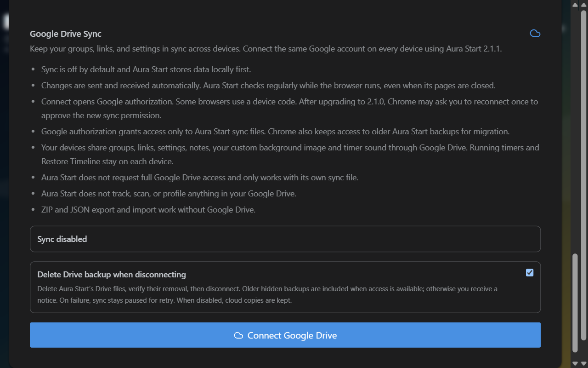

New tab
Links, Groups, and Notes
Organize everyday links into nested groups, keep Markdown notes nearby, and choose your own appearance. This example uses a built-in background.
Explore grouped links, Markdown notes, Countdown, full ZIP backups, custom timer audio, and optional Google Drive synchronization.
Captured on October 4, 2026 from a fresh Aura Start 2.1.1 build in Chrome 154, using an isolated local preview with demo data and Drive disconnected. These real browser renders show the shared application interface; they do not demonstrate Google authorization or native Firefox homepage controls.
Organize everyday links into nested groups, keep Markdown notes nearby, and choose your own appearance. This example uses a built-in background.

Set a duration, then start, pause, resume, or reset your timer. Keep an Aura Start page open for the completion sound; it can remain in the background.

Keep settings, links, notes, Restore Points, background images, and the selected original custom timer sound in one ZIP. The separate JSON option omits media. See the backup guide.

Choose an audio file, preview the signal, and adjust its volume. This scene imported a generated sample through the real file picker. Audio preparation happens on your device, with a 20 MiB file limit and up to 60 seconds of playback.

Drive starts disconnected. Connecting the same Google account shares saved content through one visible Aura Start file. This screenshot shows the actual disconnected controls, not a simulated successful connection. Read the sync guide before connecting or deleting a cloud copy.